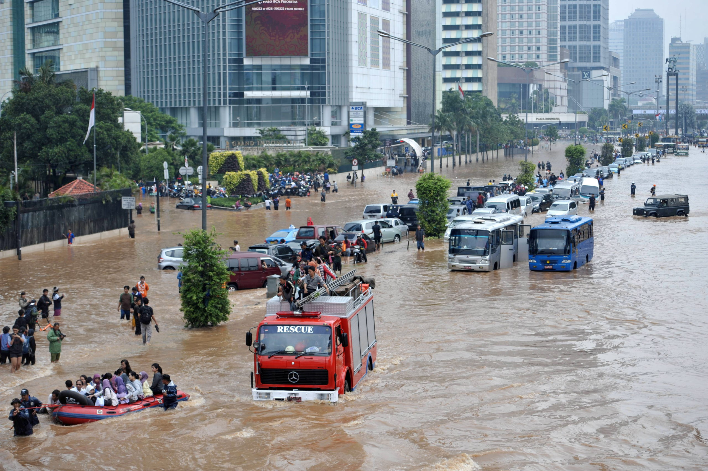

Laporkan Apapun Permasalahanmu
Seperti Sedikit contoh kejadian dibawah ini
Banjir
Jalan Rusak
Kebakaran
Pohon Tumbang
Lampu Merah Rusak

Banjir
fenomena alam yang terjadi ketika air menggenangi area yang biasanya kering, biasanya disebabkan oleh curah hujan yang tinggi, meluapnya sungai, atau naiknya permukaan laut.
- Kerusakan Infrastruktur: Jalan, jembatan, dan bangunan bisa hancur.
- Kerugian Ekonomi: Sektor pertanian dan bisnis sering terkena dampak.
- Penyakit: Genangan air bisa menjadi tempat berkembang biaknya penyakit, seperti demam berdarah dan kolera.